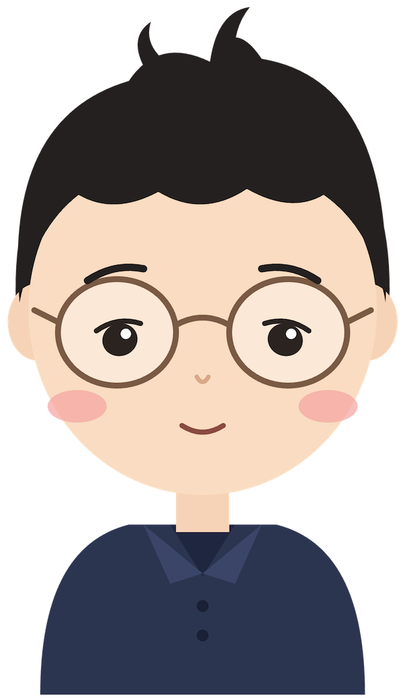

About me

音響の専門学校を卒業後、派遣社員として働きながらレコーディングエンジニアを経験。その後、フィーチャーフォン向け音楽配信サービスのサイト制作に携わり、IT 業界へ転身しました。
PC サイトのデザイナー、コーダーを経て、IT 技術やプログラミングへの関心を深め、学校でプログラミングを学んだ後、Web エンジニアとしてのキャリアをスタート。
約 20 年にわたり Web サービスの開発に携わり、現在は開発部門の責任者として、日本・ベトナム合わせて約 23 名の開発組織をマネジメントしています。
（日本・ベトナム合計）
立ち上げから組織拡大
（自動テスト導入による）
職務経歴概要
ソフトウェアエンジニア
PHP / Laravel を中心とした Web アプリケーション開発に従事。
アプリケーション開発だけでなく、DB 設計、API 設計、AWS、サーバー・インフラ、ログ調査、パフォーマンス改善、障害対応、CI/CD、自動テストなど、サービスを構成する技術領域を幅広く経験してきました。
テクニカルスキル
| カテゴリ | 技術・ツール | 経験年数 | 経験内容・具体的な業務 |
|---|---|---|---|
| Web アプリケーション開発 | PHP | 10 年以上 | Web アプリケーションの設計、実装、コードレビュー、運用・保守 |
| Laravel | 7 年 | Web サービスの設計・開発、開発方針・実装ルールの策定 | |
| JavaScript | 10 年以上 | Web フロントエンドの実装・改修 | |
| TypeScript | 3 年 | Web フロントエンド開発 | |
| Vue.js | 4 年 | Web アプリケーションの画面設計・実装 | |
| データベース | MySQL | 10 年以上 | 論理・物理設計、インデックス設計、クエリ分析、運用、パフォーマンス改善 |
| クラウド・インフラ | AWS | 7 年 | EC2、ALB、RDS、S3、Route 53、IAM、ACM を利用した Web サービス基盤の構築・運用 |
| Amazon Linux / CentOS | — | Web・アプリケーションサーバーの構築、設定、運用、障害対応 | |
| Ansible | 5 年 | サーバー設定・環境構築の自動化 | |
| 監視・ログ | Grafana, Prometheus, Node Exporter |
7 年 | サーバーおよびアプリケーションのメトリクス監視、障害・性能調査 |
| Fluentd, Elasticsearch, Kibana |
3 年 | ログの収集・集約・検索環境の構築および運用 | |
| その他 | Swift | 1 年 6 カ月 | 基礎的な開発経験 |
| Ruby | 6 カ月 | 基礎的な開発経験 |
開発マネージャー
2017 年頃から開発部門のマネジメントを担当。現在は約 23 名の開発組織について、以下を管轄しています。
ケーススタディ
ベトナム開発拠点を 3 名から約 15 名へ拡大
背景
国内でのエンジニア採用が難しくなる中、ベトナムでの開発体制構築を開始しました。ラボ型で 3 名の開発体制から始め、その後現地法人を設立し約 15 名まで拡大し、エンジニア人件費を日本採用時と比較して約 65％削減しました。
取り組み
採用人数を増やすだけではなく、継続的に開発できる組織として成立させるため、以下を担当しました。
- 現地訪問
- 採用方針の策定
- エンジニア採用
- コミュニケーター採用
- コミュニケーター候補者約 20 名の面接
- 評価制度・給与テーブルの設計
- 現地マネージャーの育成
- チーム編成・組織設計
- 日本・ベトナム間の開発プロセス設計
- コミュニケーションルールの整備
- 日本側との調整・マネジメント
結果
単なる海外採用ではなく、採用・制度・組織・開発プロセスまで含めた海外開発拠点の立ち上げ・拡大を経験しています。
スクラム開発導入とプロセスの改善
チーム自身が改善を回す土台をつくる背景
2021 年頃、開発チームにスクラムを導入しました。導入当初は、スクラムを部分的に導入したこともあり、さまざまな問題が発生しました。
- Sprint 開始後に新しい依頼が入る
- 一度合意した仕様が変更される
- 開発チーム以外のステークホルダーにスクラムの考え方が十分に共有されていない
- Planning / Refinement で詳細な設計議論に入り込み、時間が長くなる
取り組み
開発チームだけの問題として扱うのではなく、関係するステークホルダーを含めて開発プロセスそのものを改善することに取り組みました。具体的には、
- 新しいステークホルダー向けのスクラム説明資料の作成
- スクラムの考え方・開発プロセスの啓蒙
- Planning / Refinement での議論方法の改善
- Sprint 開始後の短時間のコミュニケーションによる問題解決
- Pair Programming / Mob Programming の活用
- 必要な情報をドキュメントとして残す
- Acceptance Criteria の標準化
- 「何をもって完了とするか」の判断基準の明確化
などを行いました。
結果
スクラム導入によって最も大きかった変化は、単に開発イベントを導入したことではなく、チームが自分たちで問題を発見し、改善していくための土台を作れたことです。
自動テスト導入
本番環境で発生するバグを半分以下に削減背景
以前はテストケースの運用やテストコードの文化が十分になく、品質が担当エンジニアに依存していました。
取り組み
- Unit Test
- Integration Test
- E2E Test
- テストケースの作成・運用
- テストケースのレビュー制度
- Code Review
- CI/CD による Lint・品質チェック
などを導入しました。
結果
結果として、本番環境で発生するバグを半分以下に削減しました。
「担当者がもっと注意する」という個人依存の改善ではなく、品質をチーム・プロセス・自動化によって担保する開発体制へ変えていきました。
マネジメント
自律的に問題解決できるチームを作る
自分のマネジメントにおいて最も重視している考え方です。
組織が大きくなるほど、マネージャー一人ですべての問題を把握し、改善案を考え、指示することには限界があります。そのため、
メンバーが自分たちで問題を発見し、考え、判断し、改善できる状態を作る
ことを重視しています。
主にレトロスペクティブを起点に問題の把握から改善案の提案、アクションプランの決定、実施までをメンバー自身が行い、マネージャーの役割は、すべての答えを持つことではなく、チームが自ら答えを出せる環境を作ることだと考えています。
人を尊重することから始まる
私は、社員一人ひとりが会社やプロダクト、そして一緒に働く仲間に対して「好き」「ここで働きたい」と思えることが、組織づくりにおいて大切だと考えています。
そうした気持ちや安心感があってこそ、一人ひとりの潜在能力や主体性が引き出されると思うからです。
そのため、表面的なコミュニケーションのテクニックだけではなく、相手を尊重し、相手の立場や考えを理解しようとする姿勢を大切にして、日々メンバーと接しています。
プロダクトへの考え方
「作ること」ではなく「価値を届けること」
過去に、開発した機能やサービスがリリース後にほとんど利用されなかった経験があります。この経験から、開発前に以下を確認することを意識するようになりました。
- 本当にユーザーが必要としているのか
- どのような課題を解決するのか
- ユーザーにどのような価値を提供するのか
技術的に実現可能であることだけをゴールにせず、ユーザーに価値が届くところまでを開発の目的として考えることを重視しています。
今後貢献したいこと
これまでの経験を活かし、技術とマネジメントの両面から開発組織とプロダクトを成長させる役割に取り組みたいと考えています。特に、
に取り組んでいきたいと考えています。
自分が目指しているのは、技術を理解した上で、エンジニアがより良い仕事をできる環境を作ることです。そして、
メンバーが会社やプロダクトを自分ごととして考え、ユーザーに高い価値を届けるために、自ら考えて行動できるチーム
を作りたいと考えています。そのようなチームを作り、継続的に改善することで、
「このサービスがあってよかった」とユーザーに思ってもらえるプロダクト
を生み出していきたいと考えています。
技術とマネジメントの両面から、良いプロダクトと良い開発組織を作ること。
それが、これからの自分のキャリアにおける目標です。